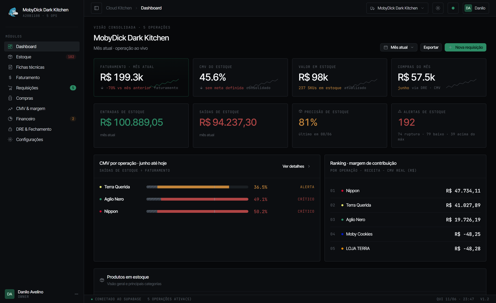
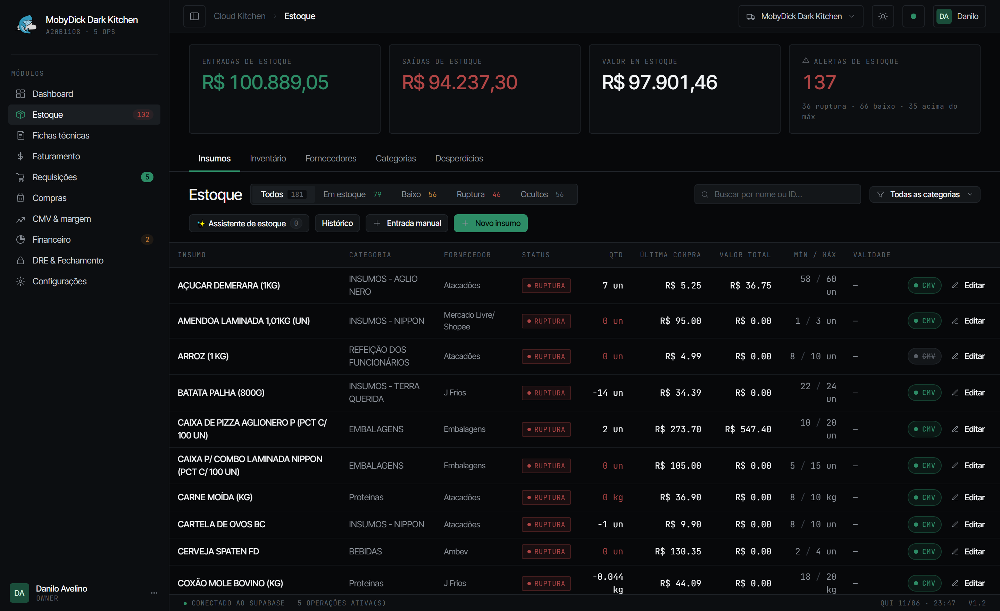
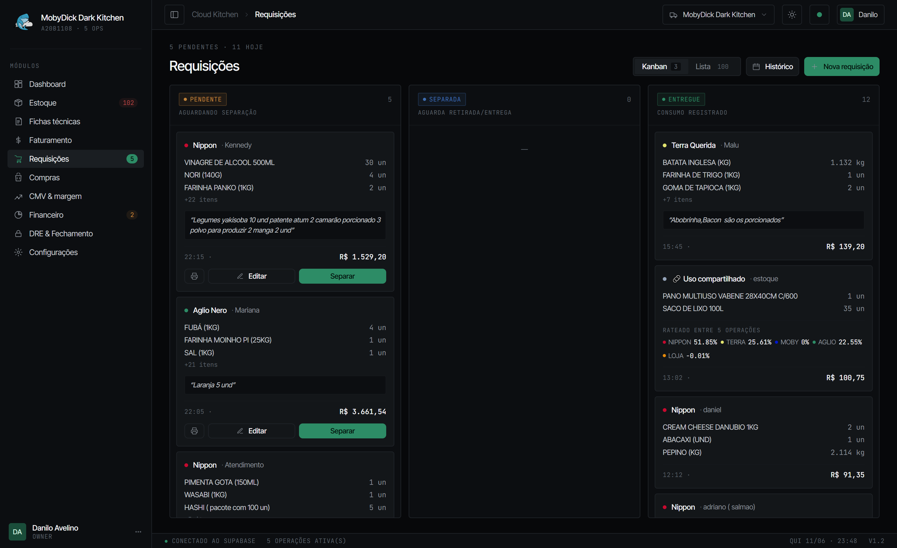
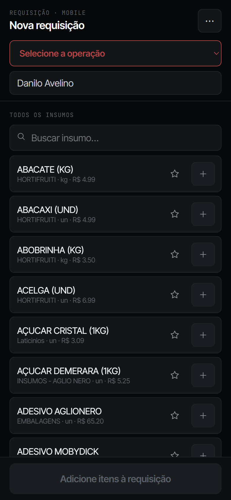
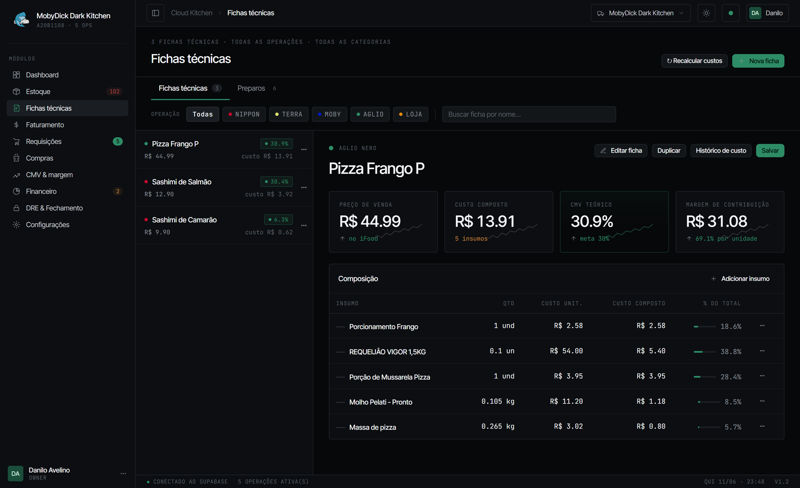
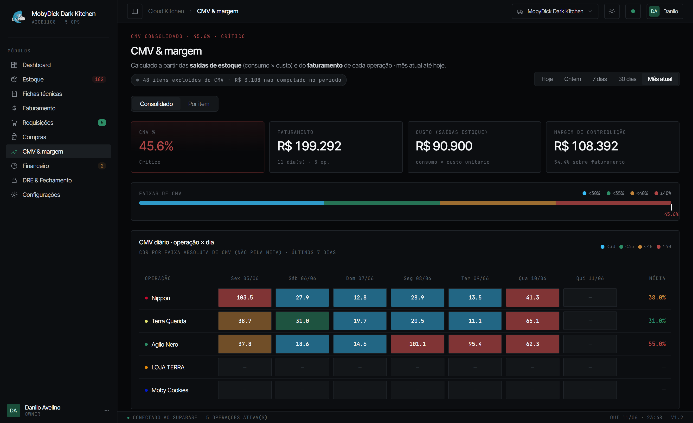
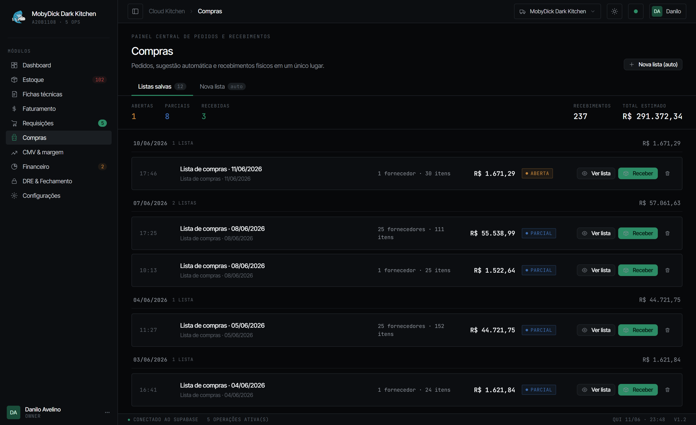
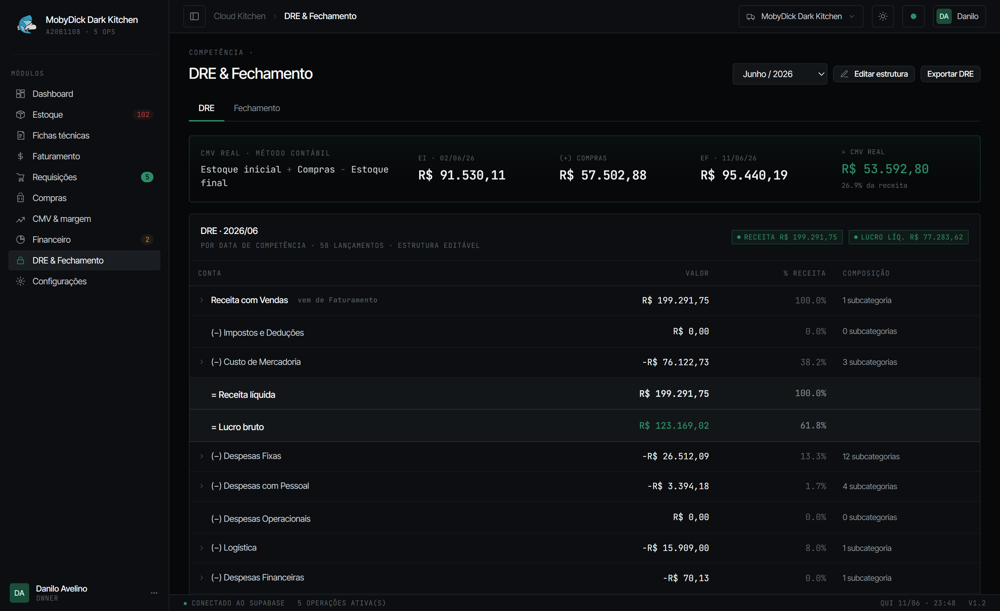

O Cloud Kitchen não é só um sistema. Nós entramos na sua operação para aplicar um método validado de gestão de dark kitchens e delivery: estoque, lista de compras automática, CMV diário por marca e DRE automática — tudo no mesmo lugar, alimentado pela sua rotina.

Os prints abaixo não são maquete: são o Cloud Kitchen rodando na cozinha MobyDick, que opera 5 marcas de delivery. O que você vê é o que sua equipe vai usar.
Insumo com unidade de cozinha, fornecedor, mínimo e custo pela última compra. Ruptura aparece em vermelho antes de virar falta no serviço, e cada movimentação fica registrada: entrada, saída, ajuste, desperdício.

A equipe de cada marca pede pelo celular. O estoquista recebe no kanban, separa e entrega — e a entrega lança a baixa no estoque automaticamente, com rateio entre as operações quando o insumo é compartilhado. Ninguém transcreve pedido de papel.


A ficha é montada com os insumos do estoque. Quando o preço de um insumo muda numa compra, o custo composto e a margem de todas as fichas que o usam são recalculados — e o sistema alerta se o CMV teórico estourar a meta que você definiu.

O CMV é calculado todos os dias a partir das saídas reais de estoque e do faturamento de cada operação. O mapa operação × dia mostra onde a meta estourou — em vermelho, sem maquiagem — para você agir na semana, não no fechamento.

O sistema gera a lista a partir do consumo e dos mínimos — agrupada por fornecedor, com estimativa de valor. No recebimento físico, a conferência atualiza saldo e custo de uma vez. Recebimento parcial? A lista sabe o que ainda falta chegar.

Vendas, compras e estoque já estão no sistema — então a DRE se monta sozinha, pelo método contábil: estoque inicial + compras − estoque final. Você acompanha o resultado do mês em andamento e fecha o período com checklist de impeditivos.

Fechamento de caixa por dia, operação e turno — débito, crédito, PIX, dinheiro e online. A receita alimenta a DRE automaticamente.
Contas a pagar com vencimento, status e categoria da DRE. Checklist de fechamento para nada ficar de fora do mês.
Contagem com ajuste auditável e desperdício registrado por motivo — inclusive extravios. Precisão de estoque medida no dashboard.
Importe o extrato (OFX/CSV) e concilie as saídas com os lançamentos do financeiro. Stone · em breve
Vincule plataformas de venda a cada operação para automatizar o faturamento. iFood · em breve
Operações separadas dentro da mesma cozinha, permissões por módulo e troca de conta para grupos com várias unidades.
O Cloud Kitchen aprende com o seu uso e evolui com o tempo. O que sua equipe faz repetidamente, o sistema passa a fazer sozinho: lançamentos financeiros, classificação de contas na DRE, conciliação bancária, quantidades de estoque e listas de compras.
Quanto mais você opera, menos você digita.
Sistema sem método vira planilha cara. Por isso a implantação faz parte do produto: entramos na sua operação e aplicamos o método que validamos na nossa própria dark kitchen.
Entendemos suas marcas, cardápio, fornecedores e a rotina atual — mesmo que hoje tudo viva em planilhas e cadernos.
Subimos insumos, fichas técnicas e estrutura de DRE junto com você. Ninguém recebe um sistema vazio para se virar.
Treinamos cozinha e estoquista no fluxo: requisição, separação, recebimento, inventário. O método vira hábito.
Você passa a decidir com CMV diário e DRE em mãos — e acompanhamos os números com você nas primeiras semanas.
O Cloud Kitchen nasceu dentro de uma dark kitchen multi-marca em operação — cada módulo resolve um problema que apareceu na prática, não em slide de consultoria.
Estoque central único, requisições por marca e CMV diário aberto por operação — inclusive com rateio dos insumos compartilhados. Você enxerga a margem de cada marca, todos os dias.
Controle de insumos, ficha técnica e margem por item de cardápio. As taxas de app entram na DRE — você vê a margem que sobra de verdade.
Cada unidade em uma conta isolada, com troca de conta no mesmo login. Permissões por módulo: a equipe da cozinha não acessa o financeiro.
Margem e custo são informação sensível. A plataforma foi construída com isolamento de dados por cliente desde a primeira linha — não como camada adicionada depois.
Cada cozinha vive em um ambiente isolado por Row-Level Security no PostgreSQL (Supabase). Um cliente nunca enxerga dados de outro.
Defina quem acessa estoque, financeiro ou DRE. Quem não vê o módulo, não edita o módulo — vale também para a tela mobile.
Toda movimentação de estoque registra quem fez, quando e a partir de quê. A posição de cada dia fica preservada.
Funciona no computador da gerência e no celular da cozinha. Tema claro e escuro, impressão térmica 80mm para o romaneio.
Demonstração guiada de 30 minutos com a nossa própria operação: do pedido da cozinha ao DRE fechado. Depois, conversamos sobre a implantação na sua.